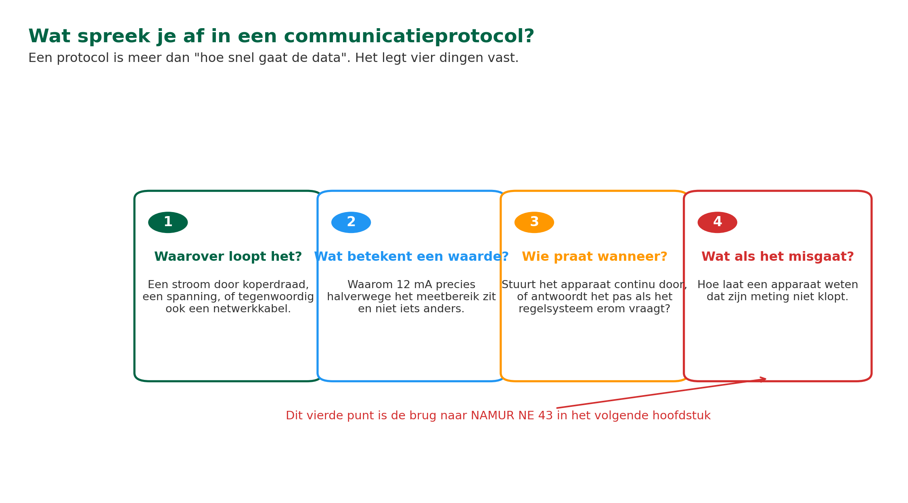
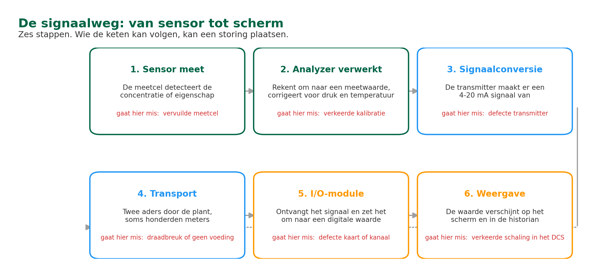
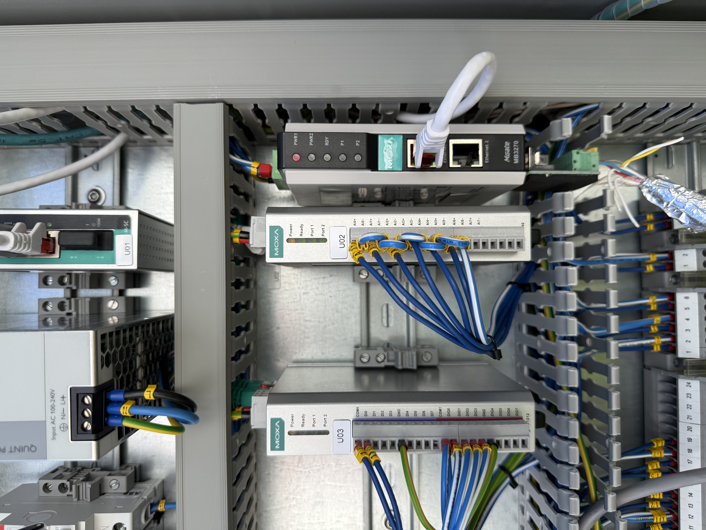
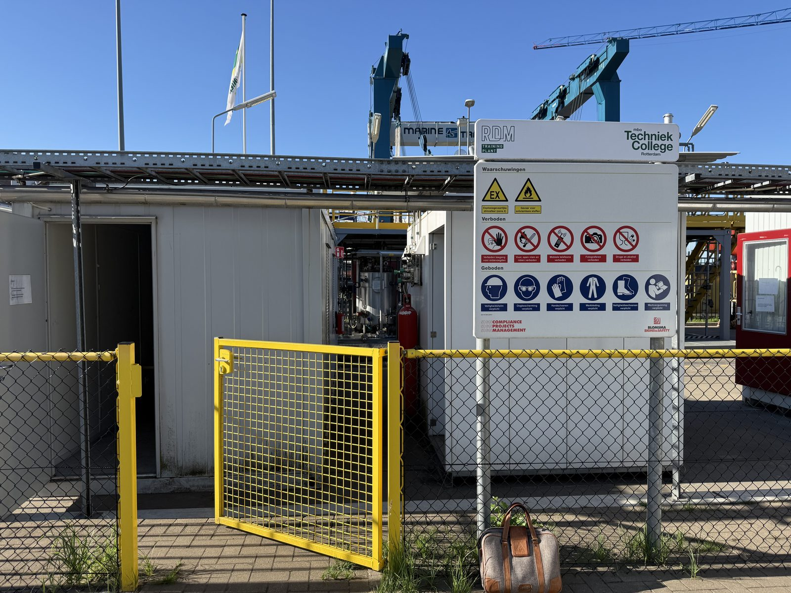
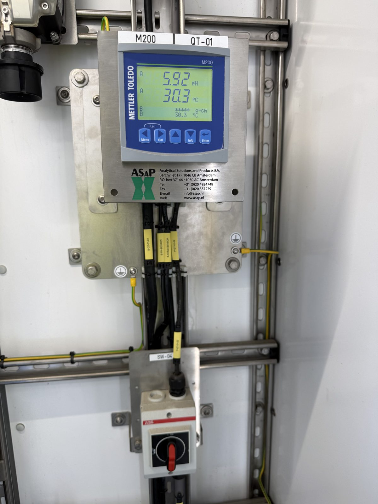
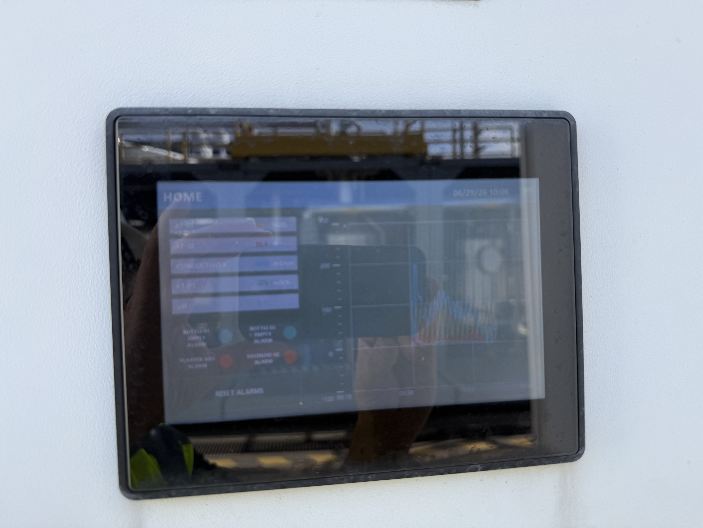

ANA – Module 4
3.1 Leerdoelen
Na het volgen van dit hoofdstuk kun je:
- Uitleggen wat een communicatieprotocol is en welke vier dingen erin worden afgesproken
- De zes stappen van de signaalweg benoemen en aanwijzen waar je ze in de installatie terugvindt
- Uitleggen wat een transmitter doet en waarom een meetwaarde wordt omgezet naar een gestandaardiseerd signaal
- Uitleggen waarom gestandaardiseerde communicatie essentieel is voor betrouwbare meetdata
- Bij een gemelde storing beredeneren op welke plek in de signaalweg het probleem kan zitten
3.2 Van analyzer naar controlekamer: Hoe praten apparaten deze systemen met elkaar?
Taal als communicatieprotocol
Stel je voor: je werkt op een internationale luchthaven. De verkeersleiders komen uit Nederland, de piloten uit Japan, Brazilië en Duitsland. Als iedereen zijn eigen taal spreekt, ontstaat er chaos. Daarom is er afgesproken dat iedereen Engels spreekt, met vaste procedures en standaard zinnen. Dat is een protocol: een afspraak over hoe je communiceert.
In de procesindustrie is het precies hetzelfde. Een analyzer meet een waarde, bijvoorbeeld 3,2% zuurstof, maar die waarde moet op de juiste manier worden doorgestuurd naar het DCS in de controlekamer. De operator moet die waarde op zijn scherm zien, het regelsysteem moet erop kunnen reageren, en het historisch dataopslagsysteem (historian) moet het kunnen opslaan.
Daarvoor heb je een communicatieprotocol nodig: een afspraak over hoe de analyzer zijn meetwaarde omzet in een signaal, hoe dat signaal wordt verzonden, en hoe het aan de andere kant wordt begrepen.
Wat spreek je in zo’n protocol dan precies af? Het komt neer op vier dingen. Waarover het signaal loopt: een stroom door een koperdraad, een spanning, of tegenwoordig ook een netwerkkabel. Wat een waarde betekent: waarom 12 mA precies halverwege het meetbereik zit en niet iets anders. Wie wanneer iets zegt: stuurt het apparaat continu door, of antwoordt het pas als het regelsysteem erom vraagt. En wat er gebeurt als het misgaat: hoe laat een apparaat weten dat zijn meting niet klopt.
In Module 2 heb je het verschil geleerd tussen instrumentatie (druk, temperatuur, flow) en analysetechniek (chemische samenstelling). Dat verschil speelt ook mee bij communicatie. Een druktransmitter stuurt een eenvoudig 4-20 mA signaal, maar een gaschromatograaf kan veel meer data versturen: meerdere componenten, diagnostiek, statusmeldingen. Dat vraagt om slimmere protocollen.
In dit hoofdstuk volgen we eerst de weg die een meetwaarde aflegt en de onderdelen die je daarbij tegenkomt. Welke protocollen er in de praktijk over die weg lopen, wat ze kunnen en hoe ze van elkaar verschillen, behandelen we in het volgende hoofdstuk.

De vier dingen die je in een communicatieprotocol afspreekt.
Wat leg je vast in een communicatieprotocol?
A) Alleen de snelheid waarmee data over de kabel gaat, in bits per seconde
B) Het merk en type van de analyzer die is aangesloten
C) Hoe vaak de analyzer gekalibreerd en onderhouden moet worden
D) Waarover het loopt, wat een waarde betekent en wat er bij een fout gebeurt
Waarom is dit belangrijk voor jou als technicus?
Als analyzer-technicus krijg je niet elke dag actief met signalen te maken. Meestal werkt de analyzer en gaat alles automatisch zijn gangetje. Maar zodra er een storing of een rare meetwaarde wordt gemeld vanuit de controlekamer, en je hebt lokaal bij de analyzer al gecontroleerd dat het apparaat zelf goed werkt, dan zou het probleem ergens in de signaalweg tussen de analyzer en het DCS kunnen liggen. Dat is het moment waarop je deze basiskennis nodig hebt: zit het in de transmitter, in de kabel, in de I/O-module, of in de schaling van het DCS?
3.3 De signaalweg: Van sensor tot scherm
Het pad dat een meetwaarde aflegt
Laten we stap voor stap volgen hoe een meetwaarde van de analyzer in de controlekamer terechtkomt:
- De sensor meet. De meetcel in de analyzer detecteert wat je wilt weten: een concentratie van een component (zoals zuurstof of CO in een gasstroom) of een eigenschap van het medium (zoals pH of geleidbaarheid in een vloeistof). Dat levert een ruw elektrisch signaal op.
- De analyzer verwerkt. De elektronica rekent het ruwe signaal om naar een meetwaarde in de juiste eenheid (bijvoorbeeld procent O₂ of ppm CO). Tegelijk worden correcties toegepast voor temperatuur, druk en andere invloeden.
- Signaalconversie. De meetwaarde wordt omgezet in een gestandaardiseerd signaal dat geschikt is voor transport. Het meest gebruikte signaal is het 4-20 mA stroomsignaal (daarover meer in het volgende hoofdstuk, §4.3).
- Transport. Het signaal gaat via een kabel, of in sommige gevallen draadloos, naar het DCS (Distributed Control System, de centrale regelcomputer in de controlekamer) of naar een PLC (Programmable Logic Controller, een type regelaar dat vooral wordt gebruikt voor signalen die schakelen tussen aan/uit of open/dicht, en voor kleinere of zelfstandige installaties).
- Ontvangst en verwerking. Een I/O-module (Input/Output, de kaart die signalen binnenbrengt in het regelsysteem) ontvangt het analoge signaal en zet het om naar een digitale waarde.
- Weergave en regeling. De meetwaarde verschijnt op het operatorscherm (de HMI, Human Machine Interface), wordt opgeslagen in de historian (het dataopslagsysteem voor proceshistorie), en kan worden gebruikt voor automatische procesregeling.

De signaalweg in zes stappen, met per stap wat er mis kan gaan.
In Module 3 heb je geleerd over in-line, at-line en on-line analyzers. Dat zijn drie verschillende manieren om je analyzer op te stellen ten opzichte van het proces. Voor de signaalweg naar het DCS maakt het type op zichzelf niet zoveel uit: alle drie sturen het signaal op dezelfde manier door (meestal als 4-20 mA over een kabel). Wat wel verschilt is de fysieke afstand tussen analyzer en controlekamer. Een analyzerhuis dat centraal voor meerdere installaties is opgesteld, kan honderden meters van de controlekamer staan. Dan wordt de signaalweg lang, en heb je extra te maken met spanningsval, ruis en aardlussen. Hoe je een signaal daartegen beschermt, lees je in §4.7.
Op elk punt in deze keten kan iets misgaan. Een losse kabelverbinding, een defecte I/O-module, een verkeerde schaling in het DCS: als technicus moet je de hele signaalweg kunnen volgen om storingen op te sporen.

I/O-modules met de veldbedrading op genummerde klemmen. Rechts de gateway die de digitale koppeling verzorgt.

Een centraal opgesteld analyzerhuis kan honderden meters van de controlekamer staan.
3.4 Signaalconversie: Van meetwaarde naar transporteerbaar signaal
Waarom standaardisatie?
In de begintijd van de procesindustrie had elke fabrikant zijn eigen manier om meetwaarden door te sturen. De ene gebruikte 0-10 volt, de andere 0-5 volt, weer een ander gebruikte pneumatische signalen (luchtdruk). Als je apparatuur van verschillende fabrikanten wilde combineren, was dat een puzzel.
Daarom zijn er standaarden ontwikkeld. De belangrijkste voor analyzers:
- 4-20 mA stroomsignaal. De industriestandaard voor analoge signalen in de hele procesindustrie. Het meetbereik wordt lineair omgezet in een stroom tussen 4 en 20 milliampère. Je komt het tegen bij vrijwel elke analyzer, of het nu gaat om raffinage, chemie, waterzuivering, voedingsmiddelen of tankopslag. Hierover leer je alles in het volgende hoofdstuk (§4.3).
- 0 tot 10 V spanningssignaal. Minder gebruikt in de zware procesindustrie, maar je komt het tegen bij laboratorium-analyzers en in sommige oudere installaties.
- Digitale protocollen. Moderne analyzers communiceren steeds vaker digitaal via protocollen als HART, Modbus, Profibus en Profinet. Digitale signalen kunnen meer informatie meesturen dan alleen de meetwaarde, zoals diagnostiek en statusmeldingen. Wat die protocollen van elkaar onderscheidt, lees je in §4.5.
Transmitters: De vertaalmachine
De component die de signaalconversie uitvoert, heet een transmitter. Een transmitter vertaalt de meting van de sensor (of die nu fysisch is, zoals temperatuur of druk, of chemisch, zoals een gasconcentratie of een pH) naar een gestandaardiseerd elektrisch signaal.
Bij veel analyzers is de transmitter ingebouwd. Je hebt dan direct een 4-20 mA uitgang op de analyzer zelf. Bij eenvoudige sensoren (zoals een PT100 temperatuursensor) heb je een aparte transmitter nodig die het weerstandssignaal omzet naar 4-20 mA.

Een transmitter in het veld, met tag QT-01. Op het display de gemeten pH en de temperatuur.
Wat doet een transmitter?
A) Hij versterkt het radiosignaal van de analyzer
B) Hij zet de meting van de sensor om in een standaardsignaal
C) Hij regelt de temperatuur van het sample conditioning systeem
D) Hij slaat de meetdata op zodat je die later terug kunt kijken
📖 Praktijkvoorbeeld: Zuurstofanalyzer in een analyzerhuis
Een zuurstofanalyzer meet het O₂-gehalte in rookgassen, bijvoorbeeld bij een fornuis in een raffinaderij of een stoomketel in een chemiefabriek. In de praktijk gebeurt dat op twee manieren: of je plaatst een zirconia-probe direct in het rookgaskanaal (in-situ), of je voert rookgas via een sample line naar een paramagnetische analyzer in een analyzerhuis (extractief). Voor dit voorbeeld nemen we de extractieve opstelling. De sample line zorgt eerst voor de sample conditioning die je in Module 3 hebt leren kennen (koeling, drogen, deeltjes wegfilteren) voordat het gas bij de analyzer komt. Het meetbereik is 0 tot 10% O₂.
De analyzer zet de meetwaarde om in een 4-20 mA signaal:
- 0% O₂ komt overeen met 4 mA
- 10% O₂ komt overeen met 20 mA
- 5% O₂ komt overeen met 12 mA (precies halverwege)
📖 Dit signaal gaat via een twee-aderige kabel naar een I/O-module in de marshalling kast (de kast in de installatie waar alle signaalkabels vanuit het veld samenkomen), en vandaar naar het DCS. In het DCS is de schaling ingesteld: 4 mA staat voor 0% en 20 mA voor 10%. De operator ziet op zijn scherm: 'O₂ rookgas: 5,0%'.
Dezelfde signaalketen (analyzer, transmitter, 4-20 mA kabel, I/O-module en DCS) kom je in elke sector van de procesindustrie tegen. Denk aan een pH-meting in een waterzuivering, een geleidbaarheidsmeting in een tankopslag voor chemicaliën, of een vochtigheidsmeting in een voedingsmiddelenproces. De analyzer verandert, het principe blijft hetzelfde.

Het einde van de signaalweg: de meetwaarde op het bedieningsscherm.
Waarom wordt een meetwaarde omgezet naar een gestandaardiseerd signaal zoals 4-20 mA?